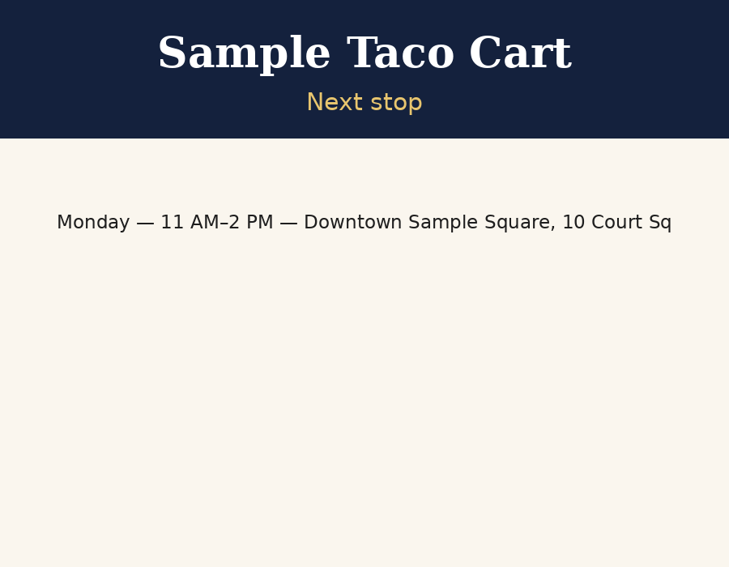
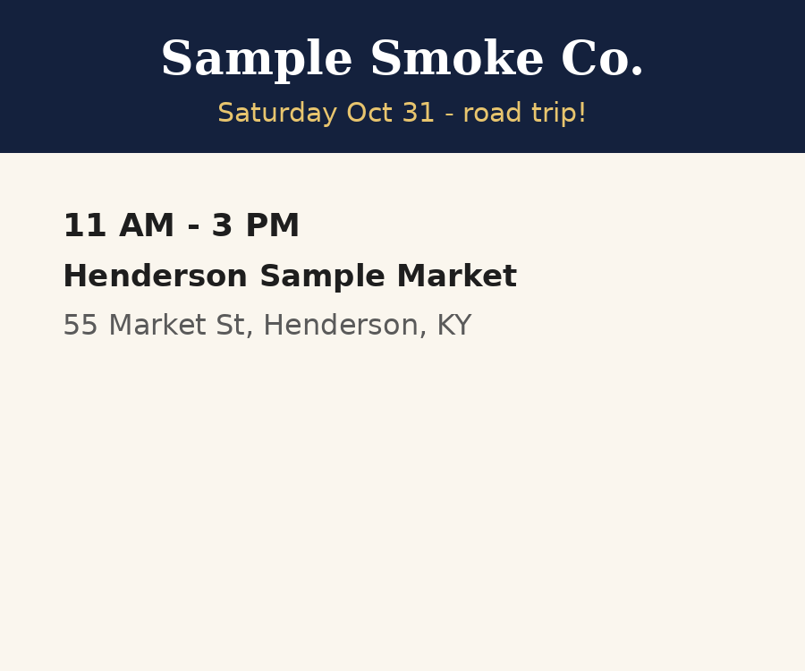
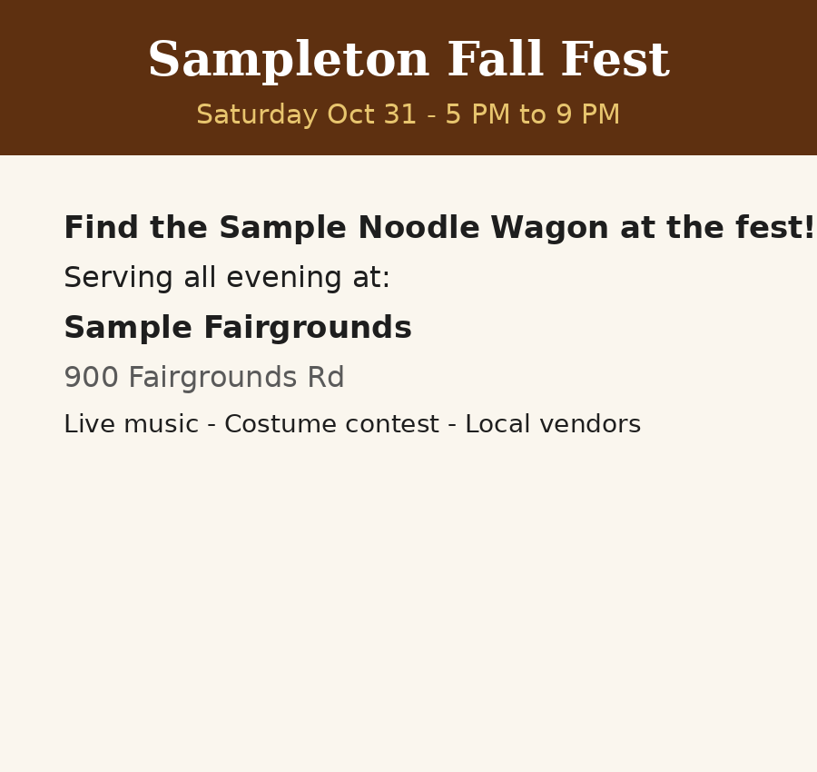
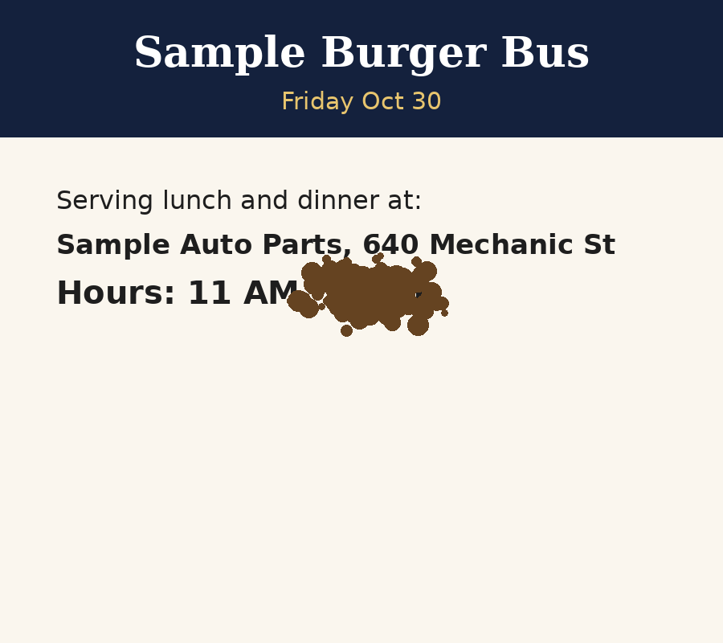
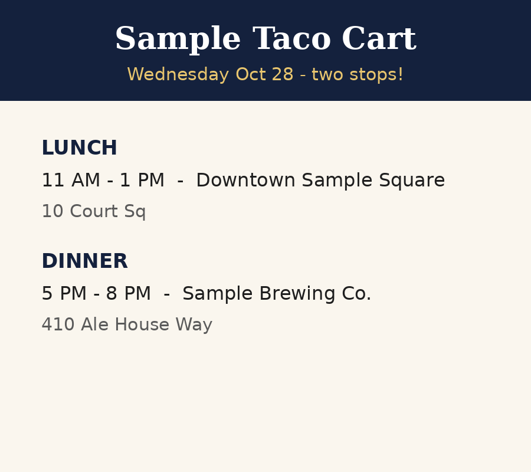
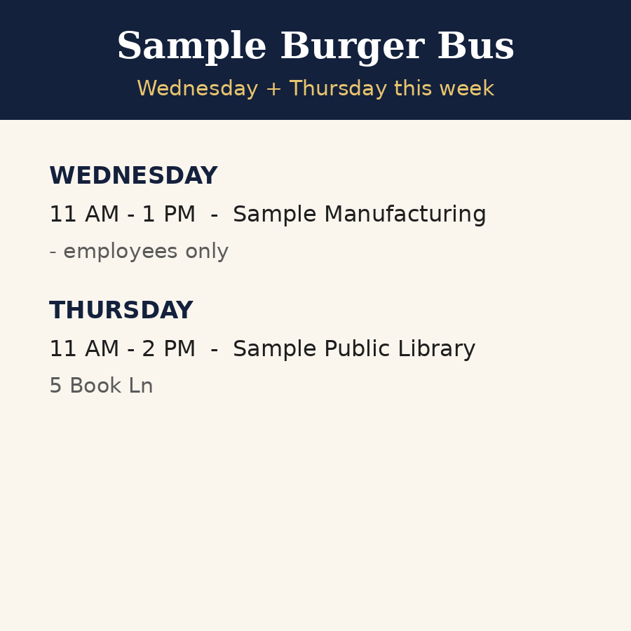
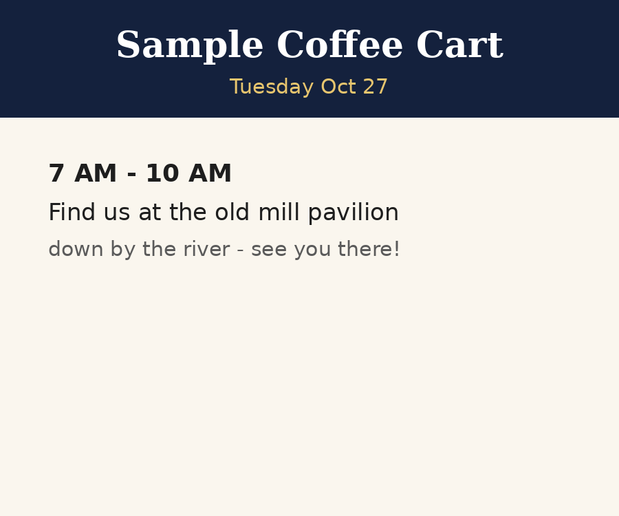
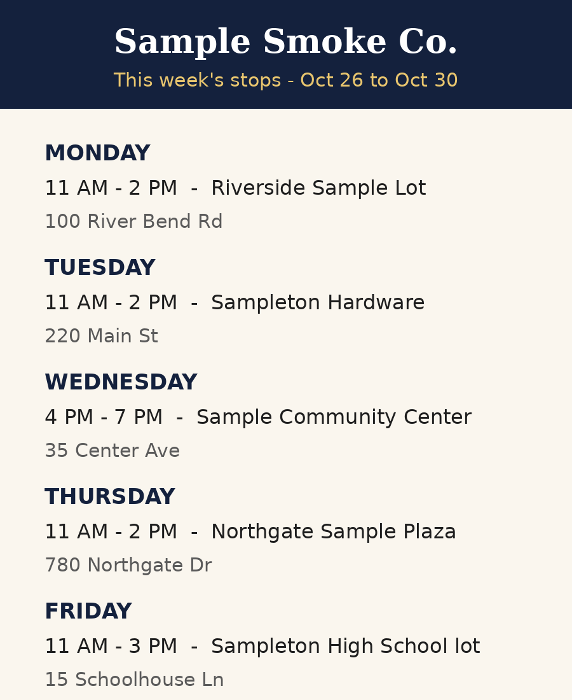

Monday: Downtown Sample Square for lunch. Details in the picture.
Lunch Board Reader Day-1 slice. Sample data only (invented trucks). Left: the post as it lands in the queue. Right: the Reader's structured read — an approval-ready draft, or the flag pile. Nothing here touches the live site.
8 posts · 4 drafts (0 approved) · 4 in the flag pile

| Date | Time | Place | Address | Stop review |
|---|---|---|---|---|
| (unresolved) | 11 AM–2 PM | Downtown Sample Square | 10 Court Sq | awaiting reviewer |

| Date | Time | Place | Address |
|---|---|---|---|
| 2026-10-31 | 11 AM–3 PM | Henderson Sample Market | 55 Market St, Henderson, KY |

| Date | Time | Place | Address |
|---|---|---|---|
| 2026-10-31 | 5 PM–9 PM | Sample Fairgrounds | 900 Fairgrounds Rd |

| Date | Time | Place | Address | Stop review |
|---|---|---|---|---|
| 2026-10-30 | 11 AM–(unknown) | Sample Auto Parts | 640 Mechanic St | awaiting reviewer |

| Date | Time | Place | Address |
|---|---|---|---|
| 2026-10-28 | 11 AM–1 PM | Downtown Sample Square | 10 Court Sq |
| 2026-10-28 | 5 PM–8 PM | Sample Brewing Co. | 410 Ale House Way |

| Date | Time | Place | Address | Stop review |
|---|---|---|---|---|
| 2026-10-29 | 11 AM–2 PM | Sample Public Library | 5 Book Ln | awaiting reviewer |
Flag(s) PRIVATE_STOP are about stops that were not returned — they are not stops and can never be approved onto the board.
flag pile
| Date | Time | Place | Address | Stop review |
|---|---|---|---|---|
| 2026-10-27 | 7 AM–10 AM | the old mill pavilion | (none) | awaiting reviewer |

| Date | Time | Place | Address |
|---|---|---|---|
| 2026-10-26 | 11 AM–2 PM | Riverside Sample Lot | 100 River Bend Rd |
| 2026-10-27 | 11 AM–2 PM | Sampleton Hardware | 220 Main St |
| 2026-10-28 | 4 PM–7 PM | Sample Community Center | 35 Center Ave |
| 2026-10-29 | 11 AM–2 PM | Northgate Sample Plaza | 780 Northgate Dr |
| 2026-10-30 | 11 AM–3 PM | Sampleton High School lot | 15 Schoolhouse Ln |